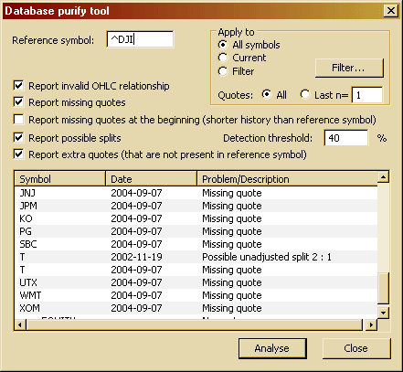

Database Purify Window
The database purify tool is provided to detect all kinds of data errors, including:
missing quotes, extra quotes, invalid OHLC relationship, and unadjusted splits.

DESCRIPTION OF CONTROLS:
- Reference symbol - This is a ticker symbol that should be used as a reference for missing/extra quote detection. Usually, this should be set to the INDEX or other instrument that is (more or less) guaranteed to be traded every trading day (without holes). The Purify tool will use this symbol data to check if other symbols are traded on the same days as the reference symbol
- Apply to: All symbols/ Current/ Filter - Allows controlling whether the check should be performed on all symbols in the database, just the currently selected symbol, or some symbols matching a custom category filter (definable via the Filter... button).
- Quotes: All / Last n= - Decides whether the report should cover all available quotes or just the last 'n' quotes ('n' is user-definable). The value of 'n' refers to the last 'n' quotes in the Reference symbol.
- Report invalid OHLC relationship - When checked, the Purify tool will report bars in which the relationship between Open, High, Low, and Close fields is invalid. The following cases are reported: Open > High, Close > High, Open < Low, Close < Low, Low > High. On by default.
- Report missing quotes - When checked, the Purify tool will report quotes that are present in the Reference symbol but are NOT present in the symbol being checked. On by default.
- Report missing quotes at the beginning (shorter history than reference symbol) - When checked, the Purify tool will report symbols that have a shorter history than the reference symbol. It will list all quotes at the beginning of the history of the reference symbol that do not have a matching quote in the symbol being checked. It is quite common for indices to have a longer history than most symbols; therefore, this option should be used sparingly, as it is not really a problem if the history of a given symbol starts later than the reference symbol. Off by default.
- Report possible splits - When checked, the Purify tool will scan quotes for previous close - current open gaps exceeding the +/- Detection threshold percentage change. If such a gap is detected, it will 'estimate' a possible split factor and report the given day as a possible unadjusted split date.
- Report extra quotes - When checked, the Purify tool will report quotes that are present in the symbol currently being checked but are NOT present in the reference symbol. If you get a lot of 'extra quote' entries, it may mean that the reference symbol you have chosen does not trade each trading day.
What You Can Do With the Result List?
After choosing appropriate options, you can run a scan for possible data problems using the "Analyse" button.
At any time, you can abort the scan using the "Cancel" button in the progress window.
Once a scan is completed (or aborted), you can review the result list, and then you can click the right mouse button over the result list and choose one of the following options:
- Add symbols to watch list - Add all items to the watch list of your choice.
- Add selected symbols to watch list - Adds selected items to the watch list of your choice. You will be able to delete symbols via Symbol -> Organize assignments.
- Copy to clipboard - Will copy the contents of the result list to the clipboard for further use in any other application.
You can also double-click on any entry to show the given chart with a selection line showing the inappropriate entry (with the exception of missing quotes).